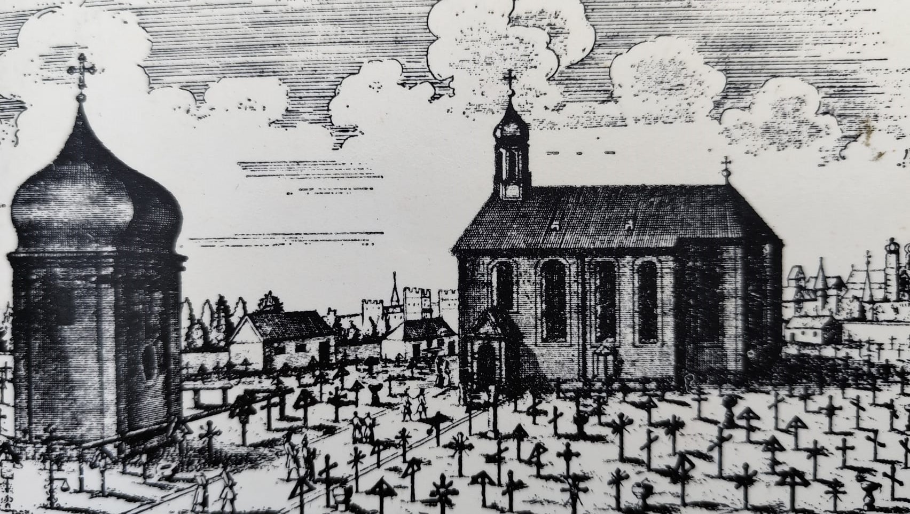

Willkommen auf dem alten südlichen Friedhof
Diese Website entstand im Rahmen einer Bachelorarbeit und widmet sich dem kulturhistorischen Erbe des Alten Südlichen Friedhofs in München. Sie dient als digitales Archiv, das verschiedene Aspekte dieser bedeutenden Begräbnisstätte beleuchtet:
Die Persönlichkeiten
Entdecken Sie die Lebensgeschichten bekannter und vergessener Persönlichkeiten, die hier ihre letzte Ruhe fanden - von Künstlern und Wissenschaftlern bis zu politischen Figuren, die Münchens Geschichte prägten.
Die Grabsteine
Erkunden Sie die faszinierende Welt der Grabsteine: Ihre Materialien, künstlerischen Gestaltungen und handwerklichen Techniken.
Interaktive Karte
Nutzen Sie unsere innovative Friedhofskarte mit diesen Funktionen:
- Berühmtheiten-Ansicht: Entdecken Sie berühmte Persönlichkeiten aus vergangener Zeit
- Grabstein-Ansicht: Lassen Sie sich von schönen Grabsteinen begeistern
- Gesteins-Ansicht: Finden Sie heraus um welche Gesteinsarten es sich bei den Grabsteinen handelt
- Augmented Reality: Halten Sie Ihr Smartphone über reale Grabsteine, um Zusatzinformationen anzuzeigen
Die Geschichte
Tauchen Sie in die 450-jährige Historie des Friedhofs durch eine Zeitleiste ein
Durch diese vielschichtige Aufbereitung macht das Projekt den Friedhof als Ort des kulturellen Gedächtnisses neu erfahrbar - sowohl für Besucher vor Ort als auch für Interessierte weltweit.
Quellen
Allgemeine Quellen
- Landeshauptstadt München, Referat für Gesundheit und Umwelt: Städtische Friedhöfe München. Online unter: www.muenchen.de/friedhof (letzter Zugriff: 16.06.2025).
- Hufnagel, M. (1983): Berühmte Tote im Südlichen Friedhof zu München. München: Zeke Verlag.
- Langheiter, A. (2008): Der Alte Südfriedhof in München. München: MünchenVerlag.
- Poschlod, K. (1983): Verwitterungserscheinungen von Naturwerksteinen und Gesteinsmodellen am Beispiel von Grabsteinen im Alten Südlichen Friedhof zu München. Diplomarbeit, Institut für Allgemeine und Angewandte Geologie, Ludwig-Maximilians-Universität München.
- Weinig, H., Dobner, A., Lagally, U., Stephan, W., Streit, R. & Weinelt, W. (1984): Oberflächennahe mineralische Rohstoffe von Bayern – Lagerstätten und Hauptverbreitungsgebiete der Steine und Erden. Geologica Bavarica 86. München: Bayerisches Geologisches Landesamt.
Persönlichkeiten
- Ainmiller, Max: de.wikipedia.org/.../Max_Ainmiller
- Albert, Joseph: de.wikipedia.org/.../Joseph_Albert
- Albert, Eugen: de.wikipedia.org/.../Eugen_Albert
- Albert, Franz Joseph: www.deutsche-biographie.de/.../sfz002_00302_1.html
- Boos, Roman: de.wikipedia.org/.../Roman_Anton_Boos
- Brey, Georg: www.deutsche-biographie.de/.../dbo018432.html
- Ett, Caspar: www.wikiwand.com/.../Caspar_Ett
- Hiltensperger, Johann Georg: de.wikipedia.org/.../Johann_Georg_Hiltensperger
- Knorr, Julius: de.wikipedia.org/.../Julius_Knorr
- Ohm, Georg Simon: stadtbus.estw.de/.../Georg-Simon-Ohm
- Robl, Thaddäus: de.wikipedia.org/.../Thaddäus_Robl
- Schlagintweit, Adolf: de.wikisource.org/.../Adolph_Schlagintweit
- Senefelder, Alois: www.erih.de/.../senefelder
- von Fraunhofer, Joseph: www.deutschlandfunk.de/.../joseph-fraunhofer
- von Gärtner, Friedrich: www.nymphenburg.com/.../friedrich-wilhelm-von-gartner
- von Klenze, Leo: die-region.de/.../leo-von-klenze
- von Kobell, Franz: www.projekt-gutenberg.org/.../kobell.html
- von Liebig, Justus: www.bsb-muenchen.de/.../liebig-justus-von
- von Miller, Ferdinand: de.wikipedia.org/.../Ferdinand_von_Miller
- von Nußbaum, Johann Nepomuk: www.muenchenwiki.de/.../Johann_Nepomuk_von_Nußbaum
- von Reichenbach, Georg Friedrich: www.muenchenwiki.de/.../Georg_Friedrich_von_Reichenbach
- von Schwanthaler, Ludwig: www.muenchenwiki.de/.../Ludwig_von_Schwanthaler
- von Schwind, Moritz: de.wikipedia.org/.../Moritz_von_Schwind
- von Seydel, Max: de.wikipedia.org/.../Max_von_Seydel
- von Siebold, Philipp Franz: www.sieboldhuis.org/.../siebold
- Zenetti, Arnold: www.loquis.com/.../Arnold+Zenetti und stadtgeschichte-muenchen.de/.../d_person.php?id=3014
Gesteine
- Adneter Marmor: www.marmor-kiefer.at/adneter-marmor und https://www.zobodat.at/pdf/BerichteGeolBundesanstalt_33_0001-0059.pdf und
http://www.marmor-kiefer.at/wp-content/uploads/2016/03/adnetermarmor.pdf - Carrara Marmor: carrara-marmor.com/.../wissen-rund-um-carrara-marmor
- Diorit: https://www.geodienst.de/diorit.htm
- Getigerter Schilfsandstein: lgrbwissen.lgrb-bw.de/.../schilfsandstein
- Hohenschwangauer Kalk: www.lfu.bayern.de/.../1893_6.pdf
- Högler Sandstein: www.natursteinonline.de/.../hoegler-sandstein-6469 und https://www.umweltatlas.bayern.de/standortauskunft/rest/reporting/sb_geotope/generate/Geotope.pdf?additionallayerfieldvalue=172A019"
- Jurakalk: de.wikipedia.org/wiki/Jura-Marmor und https://www.umweltatlas.bayern.de/standortauskunft/rest/reporting/sb_geotope/generate?additionallayerfieldvalue=577A002 und https://www.mineralienatlas.de/lexikon/index.php/Deutschland/Bayern/Mittelfranken%2C%20Bezirk/Wei%C3%9Fenburg-Gunzenhausen%2C%20Landkreis/Treuchtlingen/Haag%20bei%20Treuchtlingen/Steinbruch%20Haag
- Kalktuff: www.umweltatlas.bayern.de/.../generate und www.umweltatlas.bayern.de/.../Geotope.pdfund https://www.umweltatlas.bayern.de/standortauskunft/rest/reporting/sb_geotope/generate?additionallayerfieldvalue=175A003
- Kelheimer Kalkstein: www.natursteinonline.de/.../kelheim-153 und https://materialarchiv.ch/de/ma:material_1999?type=all
- Lausitzer Diabas: www.natursteinonline.de/.../sora-3288 und https://www.diabas.de/sora-lamprophyr/
- Lechbruck Molassesandstein: www.natursteinonline.de/.../lechbruck-6374
- Lithothamnienkalk: https://www.umweltatlas.bayern.de/standortauskunft/rest/reporting/sb_geotope/generate/Geotope.pdf?additionallayerfieldvalue=189G011 und https://www.umweltatlas.bayern.de/standortauskunft/rest/reporting/sb_geotope/generate/Geotope.pdf?additionallayerfieldvalue=187A030
- Muschelkalk: lgrbwissen.lgrb-bw.de/.../muschelkalk
- Nero Portoro: materialarchiv.ch/.../ma:material_1983
- Nummulitenkalk: www.gamssteig.de/lexikon/nummulitenkalk und https://www.umweltatlas.bayern.de/standortauskunft/rest/reporting/sb_geotope/generate/Geotope.pdf?additionallayerfieldvalue=189A024
- Ochsenkopf-Proterobas: www.umweltatlas.bayern.de/.../Geotope.pdf und http://www.bayern-fichtelgebirge.de/ochsenkopf/15.htm
- Plattensandstein: https://lgrbwissen.lgrb-bw.de/geologie/schichtenfolge/trias/buntsandstein/oberer-buntsandstein
- Redwitzit: www.umweltatlas.bayern.de/.../generate und www.mineralienatlas.de/.../RockData
- Rosenheimer Granitmarmor: www.umweltatlas.bayern.de/.../Geotope.pdf und https://www.natursteinonline.de/steindatenbank/rohrdorf-2247 und https://www.umweltatlas.bayern.de/standortauskunft/rest/reporting/sb_geotope/generate/Geotope.pdf?additionallayerfieldvalue=187A030
- Ruhpoldinger Marmor: www.lfu.bayern.de/.../79/index.htm
- Schwarz-Schwedisch Basalt: www.natursteinonline.de/.../ss-fein-12
- Serpentinit: www.natursteinonline.de/.../verde-barthelmy-2358
- Tegernseer Marmor: www.erdgeschichte-tegernsee.de/.../tegernseer-marmor.html
- Untersberger Marmor: www.marmor-kiefer.at/.../Petrografie-Untersberger-Marmor.pdf und https://materialarchiv.ch/de/ma:material_d4d3b156-b713-400d-a665-240ce2d4e9c4?type=all
- Zöblitzer Serpentin: www.mineralienatlas.de/.../Serpentinitbruch
Fotos & Bildrechte
Die verwendeten Bilder stammen aus den verlinkten Online-Quellen und wurden für diese Website kontextbezogen eingebunden.
Geschichte des alten südlichen Friedhofs
Einweihung des alten südlichen Friedhofs
Am 12. April 1553 wird der sogenannte ,äußere Friedhof‘ (auch ,ferteren Freyhof‘ genannt), der heutige Alte Südliche Friedhof, durch den Freisinger Weihbischof Oswald Fischer eingeweiht. Da die kirchlichen Begräbnisstätten innerhalb der Stadtmauern überfüllt sind, entsteht der neue Friedhof außerhalb der Stadt an der alten Ausfallstraße nach Thalkirchen. Hier finden vor allem Pestopfer, Arme, gesellschaftliche Außenseiter und Selbstmörder ihre letzte Ruhe. Protestanten bleibt eine Bestattung auf diesem Friedhof jedoch weiterhin verwehrt.
Bau der Salvatorkapelle
Errichtung der von Herzog Albrecht V. gestifteten Salvatorkapelle auf dem Gelände des Südlichen Friedhofs – ein Vorgängerbau der heutigen Stephanskirche.
Erweiterung des Friedhofs
Erste Erweiterung des Südlichen Friedhofs nach Norden.
Bau des Mesnerhauses
Bau des Mesnerhauses am Südlichen Friedhof und Einstellung eines Mesners, der für die Beerdigungen Sorge zu tragen hat.
Errichtung der lateinischen Kapelle
Auf dem eingezäunten Areal des Südlichen Friedhofs lässt Herzog Albrecht V. die sogenannte Lateinische Kapelle (Kreuzkapelle genannt) für den Jesuitenorden errichten.
Erweiterung des Friedhofs
Erweiterung des Südlichen Friedhofs nach Süden.
Bestattung von Pestopfern
Der Südliche Friedhof wurde zur letzten Ruhestätte für 15.000 Pesttote, die in Massengräbern bestattet wurden. Die Stadt markierte die Stelle mit einem monumentalen Kreuz, das ein Christusgemälde des Künstlers Mathes Zächerl trägt.
Abriss im Dreißigjährigen Krieg
Um feindlichen Truppen während des Dreißigjährigen Krieges (1618–1648) jede Möglichkeit der Verschanzung zu nehmen, ließ man die Salvatorkapelle, das Mesnerhaus, den Totenkerker (Beinhaus) sowie die umgebende Friedhofsmauer niederreißen.
Neubau des Mesnerhauses
Auf dem Südlichen Friedhof wird das Mesnerhaus neu erbaut.
-
1677

Erstehung der Stephanskirche
Auf dem Südlichen Friedhof entsteht die von Georg Zwerger erbaute Stephanskirche.
Bestattung der Opfer der Sendlinger Mordweihnacht
In einem Massengrab werden 682 Opfer der Sendlunger Mordweihnacht auf dem Südlichen Friedhof bestattet.
Leichenschau-Gesetz
Gesetzliche Verordnung der Leichenschau
Bestattungsverlagerung
Mit zunehmender Überfüllung der Friedhöfe der Kreuzkirche, der Salvatorkirche und des Franziskanerklosters wird ein Großteil der Bestattungen auf den Südlichen Friedhof verlagert.
Anlegung eines Militärfriedhofs
Auf Veranlassung des Hofkriegsrat wird in unmittelbarer Nachbarschaft zum Südlichen Friedhof ein Militärfriedhof angelegt.
Anlegung eines protestantischen Friedhofs
In unmittelbarer Nähe zum Südlichen Friedhof wurde ein protestantischer Friedhof angelegt.
Bestattungsuntersagung innerhalb der Stadtmauern
Durch zwei kurfürstliche Reskripte verfügt Karl Theodor II. ein generelles Verbot von Bestattungen innerhalb der Stadtmauern.
Einweihung des Zentralfriedhofs
Der Südliche Friedhof wird als Zentralfriedhof der Stadt eingeweiht. Aufgrund notwendiger Bauarbeiten kann er jedoch erst am 26. Juni 1789 freigegeben werden. Gleichzeitig werden alle bestehenden Gruften und Friedhöfe innerhalb der Stadtmauern geschlossen. Die sterblichen Überreste aus diesen Grabstätten werden in Massengräbern auf dem neuen Zentralfriedhof beigesetzt.
Einweihung des Zentralfriedhofs
Der Südliche Friedhof wird als Zentralfriedhof der Stadt eingeweiht. Aufgrund notwendiger Bauarbeiten kann er jedoch erst am 26. Juni 1789 freigegeben werden. Gleichzeitig werden alle bestehenden Gruften und Friedhöfe innerhalb der Stadtmauern geschlossen. Die sterblichen Überreste aus diesen Grabstätten werden in Massengräbern auf dem neuen Zentralfriedhof beigesetzt.
Einsatz von Kutschen
Für den Transport von Leichen würden erstmalig Kutschen eingesetzt.
Totenkerker-Umbau
Auf dem Südlichen Friedhof entsteht aus dem Totenkerker eines der ersten Leichenschauhäuser weltweit.
Umbettung nach Säkularisation
Im Zuge der Säkularisation (der Enteignung kirchlicher Güter durch den Staat) werden die Friedhöfe der städtischen Klöster aufgelöst und die Verstorbenen auf den Südlichen Friedhof umgebettet.
Integration des Militärfriedhofs
Der Militärfriedhof wird Teil des Südlichen Friedhofs
Friedhofsumbau unter Vorherr und von Sckell
Gustav Vorherr, Kreisbauinspektor und Baurat, übernimmt die architektonische Planung der Friedhofsanlage, während die gärtnerische Gestaltung in den Händen des Landschaftsarchitekten Ludwig von Sckell liegt.
Einweihung des jüdischen Friedhofs
Mit der Einweihung des jüdischen Friedhofs in Thalkirchen endete die Zeit, in der Juden ihre Verstorbenen nach Kriegshaber bei Augsburg überführen mussten.
Konfessionelle Gleichstellung und kommunale Reformen in München
Die neue bayerische Verfassung bewirkt die Gleichstellung der Konfessionen und macht den Südlichen Friedhof zum allgemeinen Begräbnisort. München erlangt seine Selbstverwaltung zurück, und das Bestattungswesen wird vom Magistrat (2 Bürgermeister, 16 Räte) übernommen - eine Aufgabe, die bisher Kirche und Krone verwalteten.
Ausbau des Südfriedhofs
Erweiterung und Umbau des Leichenschauhauses auf dem Südfriedhof sowie Fertigstellung der Friedhofsmauer.
-
1821
Friedhofserweiterung nach Vorherrs Plänen
Nach Plänen von Gustav Vorherr erhält das Friedhofsgelände seine Erweiterung – in Form eines monumentalen Sarkophags.
Einführung der Pflicht zum Leichentransport per Kutsche
Es wird eine gesetzliche Pflicht zum Leichentransport per Kutsche eingeführt.
Einführung von Bestattungsklassen
Der Magistrat führt ein System mit fünf unterschiedlichen Bestattungsklassen ein.
Mahnmal für die Opfer der Sendlinger Mordweihnacht
Zum Gedenken an die Opfer der Sendlinger Mordweihnacht wird ein Mahnmal in Form eines Weihwasserkessels errichtet. Der Entwurf stammt von Friedrich von Gärtner; gegossen wurde das Denkmal in der Erzgießerei Johann Baptist Stiglmaiers. Das Material – Bronze aus eingeschmolzenen Kanonen – stiftete König Ludwig I.
Cholera überlastet Südfriedhof
Während der Cholera-Epidemie stößt der Südfriedhof an seine Aufnahmegrenze. Zu diesem Zeitpunkt umfasst er etwa 20.000 Grabstellen – doch die Massensterblichkeit der Seuche überfordert die Kapazitäten.
Friedhofserweiterung
Friedrich von Gärtner erhält den Auftrag zur Erweiterung des Südfriedhofs.
-
1850
Campo Santo erweitert Südfriedhof
Der neue Friedhofsteil, als Campo Santo (‚Heiliges Feld‘) bezeichnet, erweitert den Südfriedhof um 175 Gruftanlagen und etwa 5.300 Einzelgräber.
Architekt Vorherr im Südfriedhof bestattet
Gustav Vorherr (1778-1847), der Architekt, der den Südfriedhof nach sarkophagähnlichem Grundriss gestaltete, findet hier seine letzte Ruhestätte.
Aufzeichnung der Bestattungen
Beginn der Aufzeichnung sämtlicher Bestattungen.
Katholische Einweihung von Campo Santo
Am 27. Februar 1850 weiht Erzbischof Karl August von Reisach den Campo Santo als katholischen Friedhofsteil ein.
Protestantische Einweihung von Campo Santo
Am 5. März 1850 weiht Dekan Carl von Burger den Campo Santo als protestantischen Friedhofsteil ein.
Gärtner & Schwanthalers Arkadengräber
Friedrich von Gärtner (1792–1847), der Architekt der Campo-Santo-Arkaden, wird 1857 als Erster in diesen beigesetzt. Ebenso findet der Bildhauer Ludwig von Schwanthaler (1802–1848) seine letzte Ruhe in einer Gruft der Arkaden.
Klenzes Grab im Campo Santo
Der Münchner Architekt Leo von Klenze findet in den Arkaden des Campo Santo seine letzte Ruhestätte.
Friedhöfe nach Lage benannt
Einweihung des Nördlichen Friedhofs am 5. Oktober 1868. Die Münchner Friedhöfe erhalten nun Bezeichnungen nach ihrer geografischen Lage – der bisherige Friedhof wird offiziell in ‚Südlicher Friedhof‘ umbenannt.
Bestattungslimit für Südfriedhof
Aufgrund der überlasteten Bodenverhältnisse beschließt der Magistrat, die Bestattungen auf dem Südlichen Friedhof schrittweise zu reduzieren – bis 1923 soll die Belegung deutlich sinken.
Einstellung der Familiengräber
Der Südliche Friedhof vergibt keine Familiengräber mehr – bestehende Grabstellen bleiben erhalten.
Neuer Dienstsitz
Das ehemalige Wirtschaftsgebäude des Südlichen Friedhofs wird zum neuen Dienstsitz der städtischen Friedhofsverwaltung umgebaut.
Denkmalentfernung
Nach Ablauf der Ruhefrist werden rund 900 Grabmale auf dem Friedhof entfernt.
Verwaltung zieht ein
Das ehemalige Wirtschaftsgebäude des Südlichen Friedhofs wird zum neuen Dienstsitz der städtischen Friedhofsverwaltung umgebaut.
Schließung Südfriedhof
Die Schließung des Südlichen Friedhofs wird verfügt
Luftangriff zerstört Südfriedhof
Bei einem Luftangriff wird der Großteil der Arkaden sowie die Veranstaltungsgebäude des Südlichen Friedhofs zerstört.
Offizielle Schließung Südfriedhof
Zum Jahresende wird der Friedhof offiziell geschlossen.
Friedhofs-Wiederaufbau
Der Architekt Hans Döllgast startet den Wiederaufbau des Südlichen Friedhofs.
Wiedereröffnung nach Aufräumung
Nach Abschluss der Aufräumarbeiten wird der Südliche Friedhof am 31.10.1953 wieder für die Öffentlichkeit geöffnet.
Friedhofs-Rekonstruktion
Hans Döllgast restauriert die Aussegnungshalle und die Arkaden im alten und neuen Teil des Südlichen Friedhofs.
Geschichte auf Tafeln
Der Südliche Friedhof gilt heute als historische Begräbnisstätte. Informationsschilder erläutern seinen Grundriss und die Grabstätten bekannter Persönlichkeiten.
Friedhof wird Denkmal
Der Südliche Friedhof wird als Denkmal unter Schutz gestellt.
Umbennenung des Friedhofs
Durch die Eröffnung des neuen Südfriedhofs erhält der bisherige Südliche Friedhof die Bezeichnung Alter Südlicher Friedhof.
Naturschutz für Friedhof
Der Alte Südliche Friedhof wird nach dem Bayerischen Naturschutzgesetz als schützenswerter Landschaftsbestandteil ausgewiesen.
-
2007
Grabmal-Dokumentation
5.000 Grabmäler des Alten Südlichen Friedhofs werden kunsthistorisch erfasst und dokumentiert.
Teilsperrung des Friedhofs
Zur Sicherung der historischen Grabdenkmäler werden Teile des Alten Südlichen Friedhofs vorübergehend gesperrt.
-
2007
Sanierung der Kirche
Sanierung der St.-Stephans-Kirche auf dem Alten Südlichen Friedhof
Lapidarium für Grabkunst
In der ehemaligen Aussegnungshalle des Alten Südlichen Friedhofs entsteht ein Lapidarium – eine Sammlung wertvoller Skulpturen, Bronzetafeln und Büsten aus den historischen Beständen.
Geburtstag des Friedhofs
Am 12.April 2013 wird der Alte Südliche Friedhof 450 Jahre alt.
Vereinigungsbeitritt (ASCE)
Der Alte Südliche Friedhof und der Waldfriedhof treten der "Vereinigung bedeutender Friedhöfe in Europa" (ASCE – Association of Significant Cemeteries in Europe) bei.
Jubiläum: 200 Jahre Friedhofswesen
200 Jahre kommunales Friedhofs- und Bestattungswesen in München: Ein Jubiläum der Stadtgeschichte.
Gestein auf dem alten südlichen Friedhof
- Adneter Marmor
- Carrara Marmor
- Diabas
- Diorit
- getigerter Schilfsandstein
- Högler Sandstein
- Hohenschwangauer Kalk
- Jurakalk Grau
- Kalktuff
- Kelheimer Kalkstein
- Larvikit
- Lechbrucker Molassesandstein
- Lithothammnienkalk
- Muschelkalk
- Nero Portoro
- Nummulitenkalk
- Ochsenkopf-Proterobas
- Plattensandstein
- Redwitzit
- Rosenheimer Granit
- Ruhpoldinger Marmor
- schwedischer Basalt
- Serpentinit
- Tegernseer Marmor
- Untersberger Marmor
- Zöblitzer Serpentinit
Wählen Sie ein Gestein aus der Liste aus, um Details anzuzeigen.
Persönlichkeiten auf dem alten südlichen Friedhof
- Ainmiller, Max
- Albert Familie
- Boos, Roman
- Brey, Georg
- Ett, Kaspar
- Gärtner, Friedrich
- Hiltensperger, Johann Georg
- Jolly, Philipp
- Knorr, Julius
- Kobell, Franz
- Nußbaum, Johannes Nepomuk
- Robl, Thaddäus
- Schwanthaler, Ludwig
- Schlagintweit, Adolf
- Senefelder, Alois
- Ohm, Georg Simon
- von Fraunhofer, Josef
- von Klenze, Leo
- von Liebig, Justus
- von Miller, Ferdinand
- von Reichenbach, Georg
- von Schwind, Moritz
- von Seydel, Max
- von Siebold, Philipp Balthasar
- Zenetti, Arnold
Wählen Sie eine Persönlichkeit aus der Liste aus, um Details anzuzeigen.